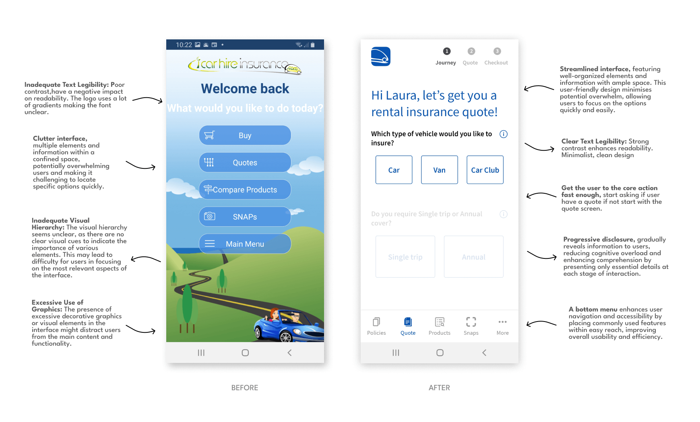
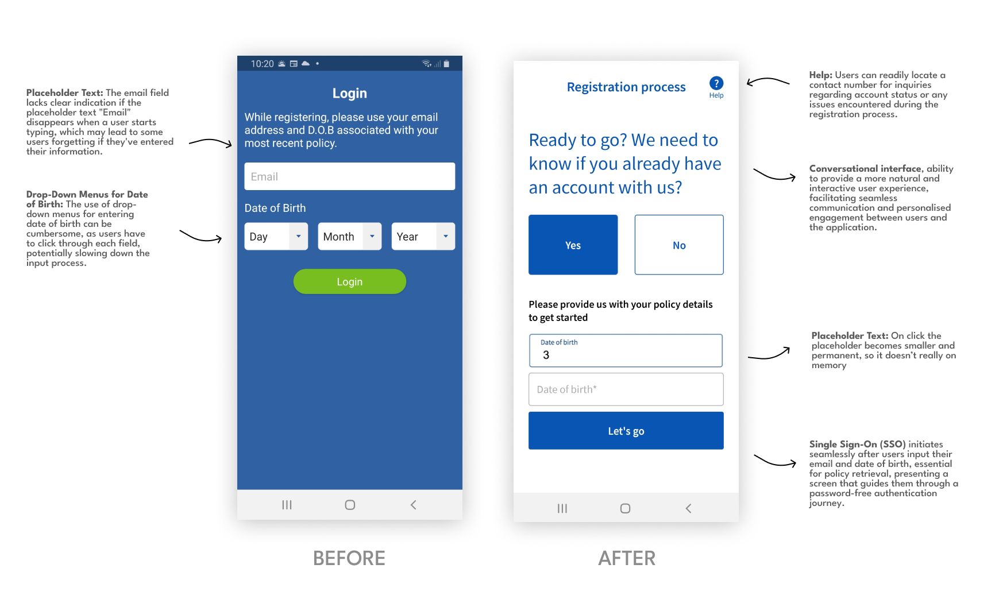
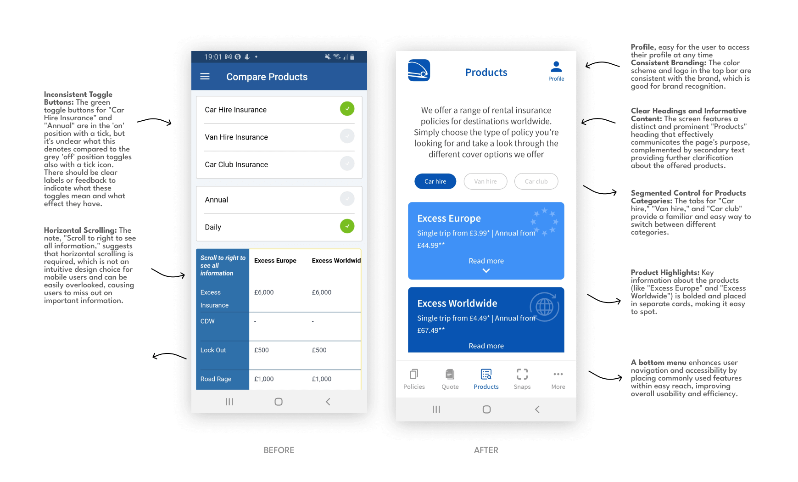
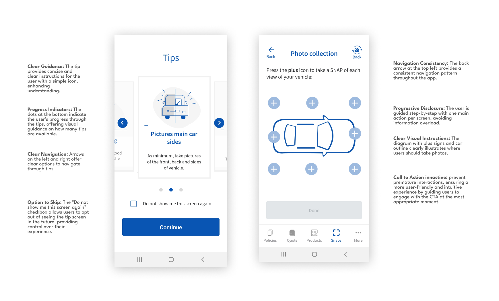
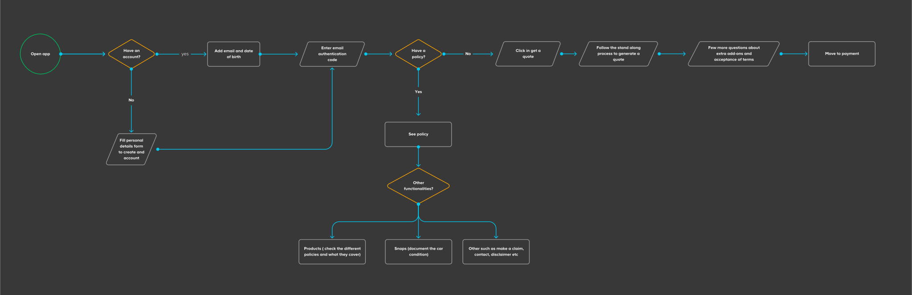

Insurance App
Team & Role
I joined Halo Insurance in the summer of 2019, it was a small company, consisting of just one other designer and myself. As a UX/UI Designer I worked closely with the founders and developers to create meaningful care hire insurance experiences.
Problem Statement
The app store reviews were overwhelmingly negative, as users were struggling to navigate through the app designed to simplify the car rental process. Instead of alleviating stress, the app was adding significant challenges in generating insurance quotes, purchasing policies, and accessing documents, thus undermining its intended purpose.
The need to address current usability issues and provide a seamless and user-friendly experience prompted the opportunity to embark in a comprehensive redesign of the existing car hire insurance app. I undertook the challenge to enhance every aspect of the user journey.
This end-to-end process was not only aimed at refining the visual aesthetics but was a strategic effort to streamline functionality and elevate overall user satisfaction. Through meticulous research, iterative design, and collaboration, the revamped app now stands as a testament to our commitment to delivering a modern and intuitive insurance solution for hire car insurance.
Main Screen
Problem: The user wants to fast and easily embark in the main job to be done at the app, get a rental insurance quote.
Solution: Offer a clean design that reduces the user's effort to get a quote and speeds up the consumer conversion.
Register
Problem: Users seek a personalised experience tailored to their specific criteria, whether they are first-time users or already have an account.
Solution: Provide a guided registration experience that empowers users to customise the process according to their preferences, ensuring seamless app entry, so users are not bouncing before even expereince the app.
Products
Problem: The user want to easily see and understand the offer for the posible rental insurtance policies.
Solution: Provide a streamlined and intuitive navigation interface that highlights key information at a glance, increasing user engagement and encouraging them to explore products and purchase policies.
New Feature - Snaps
Help the user to adequately document the condition of the vehicle.
Record the status of the hire vehicle and document the journey.
Easy to share the pictures.
Design Process
Scope
I was afforded the creative freedom to design based on best practices and insights gleaned from user feedback, leveraging both the existing help center and user reviews from the older app. As previously noted, this project was undertaken within the constraints of a small company, where resources, both in terms of design and development, were notably limited. Despite successful app development, optimal functionality remains a work in progress.
Tools
Figma | Miro | Pen & Paper | Google for competitors research and best practices
What I did
- First and foremost I conducted a thorough audit of the existing page, documenting all its components, and engaged in discussions with the founders to understand their specific needs. While I regret that the detailed audit isn't available for me to show, as I forgot to pack it with me when I left, I can yet explain to you how it served as a foundational step. Before diving into Figma, I extensively explored various mockups and sketches, refining ideas through collaboration with both the other designer and developers. This iterative process ensured a well-informed and collaborative approach to the subsequent design phase.
- I prioritised a simple and clear design that would seamlessly guide users toward their desired actions. The process of obtaining a policy quote underwent a significant shift, transforming into a progresive dissclousure conversational experience characterised by a series of question-answer interactions. This approach not only personalised the journey but also made it more engaging for users.
- Transitioned from a lengthy and confusing side menu to an unobtrusive bottom menu, ensuring all important content is visible and within easy reach of the user's thumb.
- I elevated the car hire insurance policies comparison by refining the layout and information architecture of the page. Key elements such as policy type (annual or daily) were prioritized with a simple toggle, followed by a clear presentation of various worldwide policies. Users could effortlessly grasp crucial details, notably prices, at a glance, with the option to expand specific policies for more in-depth information. This approach not only resulted in a streamlined design but also empowered users, providing both control and comprehensive insights throughout the process.
- Designed an intuitive 'Get-to-Buy' quote screen, providing users with comprehensive information about available extras and up-selling options. This approach aimed to enhance user understanding while simultaneously benefiting both the end user and the business.
- Introduced a new feature called 'Snaps' to assisted users in thoroughly documenting the condition of the vehicle.
Prototype
I generated a rapid prototype to assess functionality and provide developers with a more comprehensive view of interactivity and features. Opting for a brief video presentation, I aimed to streamline the visual process. You can download the app here Car hire App!. It's crucial to note that, as previously mentioned, the development resources were limited, potentially affecting the app's functionality. Additionally, Halo Insurance, being a car hire insurance company, faced significant revenue challenges during the pandemic. Following a merger with Cover More, unfortunately, business operations ceased.
User reviews

Final Thoughts
What I found most gratifying about this project was the opportunity to engage in its end-to-end development, embracing a spectrum of tasks ranging from crafting illustrations, and considering hierarchy and information architecture, to collaborating with developers on feasibility. For instance, during the registration process, where an authentication code is sent, there was a thoughtful discussion on whether it made more sense for the app to default to the mobile number or allow users to choose. Although there were compromises, particularly favoring email delivery as per developer preferences and system constraints. This project presented a blend of learning, challenges, and hands-on involvement in a creatively liberating and relaxed environment, something designers typically find invigorating.
So overall I consider myself lucky to being involved in the design of this product, wether then it could reach the market as it deserved that is another subject.